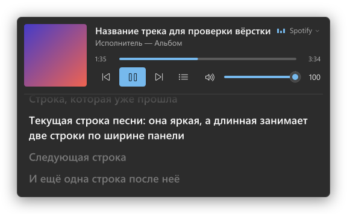
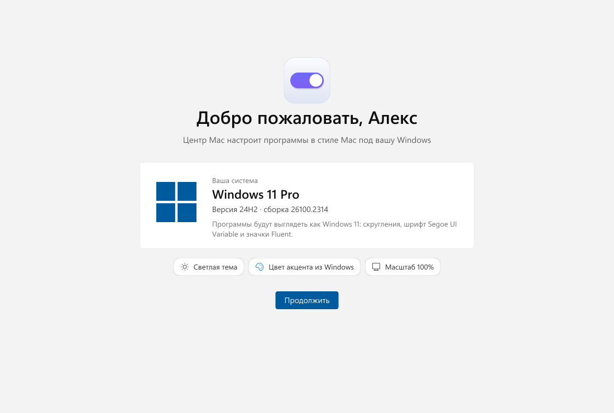
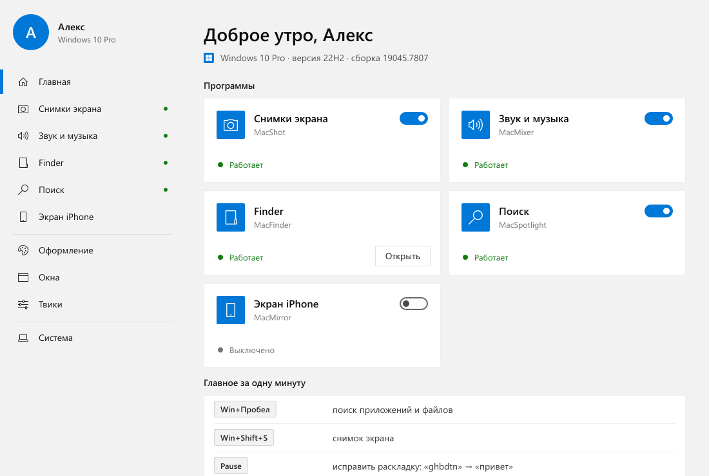

Найти что угодно — Win + Пробел
Приложения, файлы, параметры Windows и история буфера обмена в одной строке. Посчитает 2^10 и не запомнит ваши пароли.

Бесплатно для Windows 10 и 11
Пять небольших программ, которые делают привычное удобнее: поиск по Win+Пробел, музыка со словами песен, снимки экрана, Finder и экран iPhone прямо на компьютере.
Один файл, около 10 МБ · Windows 10 (1809+) и 11
Каждая программа занята одним делом и не мешает остальным. Лишнее выключается одним переключателем.
Приложения, файлы, параметры Windows и история буфера обмена в одной строке. Посчитает 2^10 и не запомнит ваши пароли.
Нажмите Pause или дважды Shift — напечатанное перепишется как надо.
Нажали клавишу музыки — сверху появляется панель с обложкой и текстом, который идёт вместе с песней. Щёлкните строку, чтобы перемотать.

Сообщения, загрузки, смена трека и заряд наушников — короткой карточкой посередине. В игре на весь экран не появляются.


Выделите фото, PDF или видео в Проводнике и нажмите пробел. Стрелками можно листать дальше.

Win+Shift+S — окно, область или экран. Win+Shift+1 — текст с картинки сразу в буфер.
Боковая панель, плитки, анализ места на дисках. Может открывать папки вместо Проводника — а может и не открывать.

«Повтор экрана» по Wi-Fi — без проводов и приложений на телефоне. Звук идёт в колонки, снимок и запись — одной кнопкой.
А чтобы перекинуть фото, наведите камеру на QR-код: файлы летят туда и обратно, как по AirDrop.

При первом запуске центр видит, какая у вас Windows, ставит нужное и дальше остаётся под рукой — как «Параметры», только про эти программы.

Программы не копируют Mac один в один. На Windows 11 у них скругления, Segoe UI Variable и значки Fluent, на Windows 10 — строгие углы и привычный Segoe UI. Тема и цвет акцента — ваши, из настроек.
Потяните ползунок на картинке.


«Пейзаж дня» рисуется сам под восход и закат в вашем городе. Утром светлеет, вечером горы розовеют, ночью появляются звёзды. Тема Windows может переключаться тоже.


Ctrl+Win+↑ раскладывает все окна живыми плитками на каждом мониторе — остаётся щёлкнуть нужное.
Ctrl+Alt со стрелками ставит окно на половину экрана, ещё раз — на две трети, потом на треть. Буквами — трети и четверти, с Win — на соседний монитор.
Всё основное — на клавишах. Эта же шпаргалка есть в самом центре.
Минута, и ничего не нужно настраивать руками.
«Центр Mac.exe» — внутри уже лежат все пять программ.
Windows не знает бесплатные программы без платной подписи и спросит. «Подробнее» → «Выполнить в любом случае».
Центр поставит сам. Для экрана iPhone и замены Проводника Windows один раз попросит права администратора.
Нужна Windows 10 версии 1809 и новее или Windows 11, 64 бита. Удалить всё — «Система» → «Удалить всё» в самом центре.
Программы ловят горячие клавиши и для исправления раскладки сами печатают текст — так же ведут себя и вредные программы, поэтому некоторые антивирусы настораживаются. В интернет ничего не отправляется, кроме двух случаев ниже. Исходники всех программ лежат в архиве и на GitHub.
Нет. В сеть ходят только слова песен (база lrclib.net, для играющей песни и только если слова включены) и установка Windhawk, если вы решили заменить Проводник. Экран iPhone и передача файлов работают внутри домашней сети.
По Alt+Shift или Ctrl+Shift. Если удалить поиск, Win+Пробел снова будет менять раскладку.
Да. Каждая настройка и каждый твик выключаются тем же переключателем, а «Удалить всё» убирает программы, возвращает Проводник и прежние обои.
Да, программы сами переходят на оформление Windows 11. Только замену Проводника на Finder там пока лучше не включать — она ещё не проверена и по умолчанию выключена.
Скачайте новый «Центр Mac.exe» в «Загрузки» и нажмите «Система» → «Проверить» в уже установленном центре. Он найдёт новую версию и обновит программы, настройки останутся.
Нет. Это независимые бесплатные программы для Windows, которым понравилось, как удобно устроен Mac. С Apple Inc. они не связаны и не используют её значки, шрифты или картинки.
Бесплатно, одним файлом. Не понравится — удалится так же легко.